O JW Time 4.0 apresenta muitos recursos novos. Aqui você encontrará apenas um resumo para orientá-lo;
o painel Novidades dentro do aplicativo e a página dedicada coletam os detalhes completos.
Assistente inicial, perfis de congregação e interface reorganizada.
Janela Mídia com conteúdo oficial, downloads, cache local e música de fundo.
Tela Pública, Tela de Contador de Tempo Personalizável e gerenciamento de mensagens atualizado.
Monitor web com controle local, QR e acesso remoto temporário para videoconferência.
Na primeira inicialização o JW Time mostra um assistente que coleta as configurações essenciais antes de abrir o aplicativo.
Este é o caminho recomendado para uma nova instalação, pois evita ter que procurar cada opção imediatamente
nos painéis de configurações.
Idioma e formato: escolha o idioma da interface, a linguagem do programa e o formato da hora.
Congregação: Defina o nome do perfil inicial, útil se você gerenciar vários perfis no futuro.
Reuniões: indica dias e horários de início da contagem regressiva automática.
Opções de reunião: ativar, se necessário, adaptação de durações e pausa automática entre as partes.
Telas: Configure a tela do contador de tempo e a Tela Pública nos monitores corretos.
Ao final do assistente você pode abrir o JW Time e completar apenas as opções mais avançadas, como Mídia, Servidor web,
Gravações e backups.
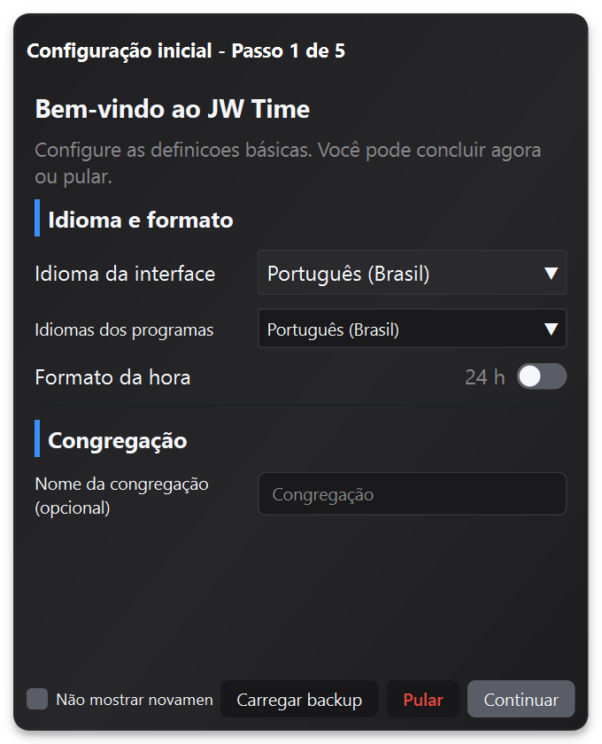
Verifique rapidamente se você ignorou o assistente ↑ Índice
Se você fechar ou pular o assistente, poderá configurar manualmente o essencial em Configurações e na janela principal.
Esta lista de verificação também serve como uma verificação rápida antes da reunião.
Idioma, perfil e programa
Vá para seção 9 · Geral para idioma e formato de hora, depois para
seção 10 · Congregações se precisar criar ou selecionar um perfil. Verifique isso
a lista de reprodução carregada corresponde à semana e ao idioma desejado.
Abra a seção 4 · Janela Mídia para verificar músicas, vídeos e imagens da semana.
As opções de cache, qualidade e plano de fundo estão na seção 13 · Mídia.
Temporizadores, mensagens e gravação
Use a janela principal para iniciar temporizadores, enviar mensagens para o contador de tempo e abrir o painel REC.
Se você grava reuniões, verifique primeiro as opções na seção 16 · Gravações.
A tela principal é o coração do aplicativo. A partir daqui você pode iniciar, gerenciar e monitorar todos os temporizadores
da reunião, visualize informações importantes, como o título da parte atual, o relógio e a hora
resíduo, além de verificar mensagens e notificações importantes.
Áreas principais
1.1 · Título da peça e relógio
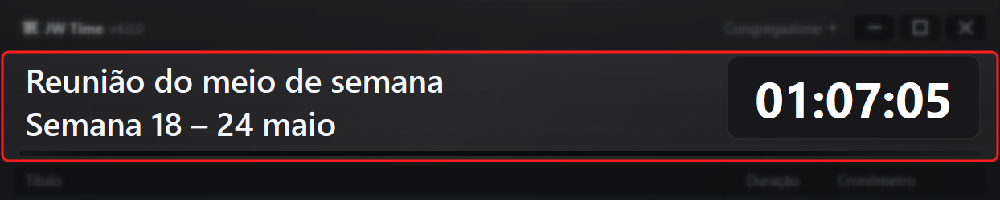
O título da peça em andamento é mostrado na linha superior, enquanto o relógio com
a hora atual ou, quando você inicia um cronômetro, a contagem regressiva do tempo restante. No formato de 12 horas também aparece
Sufixo AM/PM em tamanho menor para melhorar a legibilidade.
1.2 · Tabela de cronômetro
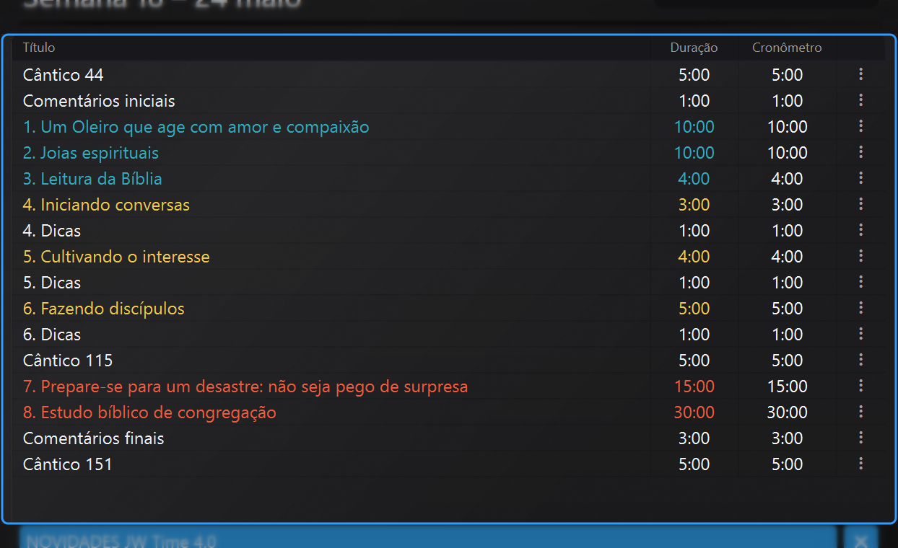
Lista a agenda da reunião (título, duração, status). O conteúdo carrega automaticamente com base no dia
selecionado: o aplicativo reconhece se é meio de semana ou fim de semana e propõe o horário correto. Para os botões
e ações detalhadas consulte seção 3 · Manipulação de temporizadores.
Se você ativar Mostrar coluna Fim nas configurações gerais, a tabela também mostra a que horas a parte atual e cada parte seguinte terminariam.
Não é um horário fixo da programação: é uma projeção atualizada em tempo real com base na hora atual, nos temporizadores restantes e nos desvios acumulados.
1.3 · Hora de término estimada
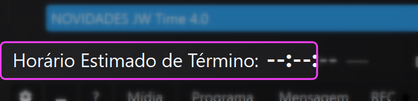
Mostra o horário de fechamento esperado com base na programação. O desvio aparece ao lado de:
+m:ss (amarelo dentro de 1', vermelho além) = atraso
−m:ss (verde) = avanço
O tempo e o indicador são atualizados em tempo real. Se os adaptativos para Estudo Bíblico/Torre de estão ativos
Guarda, as durações são recalculadas para caber no horário de fechamento.
1.4 · Tempo de pausa/troca de alto-falante
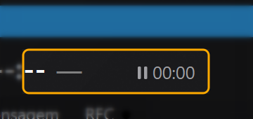
Contador cumulativo hh:mm:ss de pausas técnicas/troca de alto-falante: soma o tempo em que o cronômetro está
foi pausado. Durante a pausa, o temporizador parcial permanece parado enquanto este contador aumenta. Um clique
no indicador ele zera o total.
1.5 · Principais teclas de gerenciamento de cronômetros
Controles para iniciar, parar e gerenciar cronômetros: Parar (vermelho), Pausa e Iniciar/Próximo (verde).
O botão Pausar pausa o temporizador parcial (a contagem permanece parada) enquanto o tempo de pausa/alteração
alto-falante continua a aumentar. Para sair da pausa, pressione Pause novamente ou pule para a próxima parte com
Início/Seguinte: o tempo acumulado é registado no contador referido no ponto 1.4.
1.6 · Notícias (comunicações)
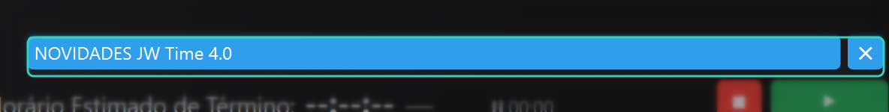
Quando há comunicações oficiais do aplicativo, uma caixa/alerta "Notícias" aparece na Tela Principal.
Clicar nele abre o painel com o resumo da atualização.
1.7 · Ferramentas rápidas
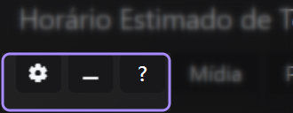
Botões rápidos para abrir configurações, minimizar ou restaurar a janela e acessar a ajuda. Eles estão separados
dos modos de operação para deixar o resultado final mais leve.
1.8 · Modos de operação
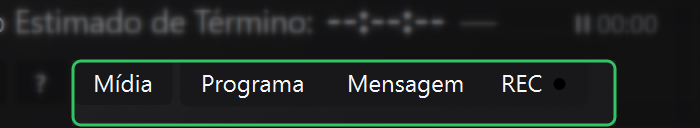
A partir daqui você pode alternar para a janela Mídia, gerenciamento de programas, mensagens e painel REC. O ponto preto
próximo a REC indica o status da gravação.
Esta seção ilustra como carregar o programa correto para a semana, criar um programa manual quando necessário e
Percorra rapidamente as semanas anteriores, atuais e próximas.
Por padrão, o aplicativo carrega automaticamente a programação da semana atual: meio da semana
de segunda a sexta e o fim de semana um sábado e domingo.
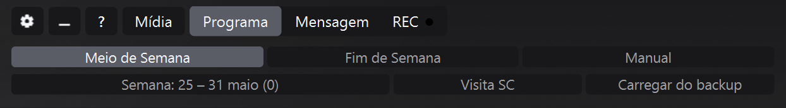
2.1 · Programação automática
Meio da semana: carrega a programação dos dias da semana.
Fim de semana: Prepare a programação de sábado/domingo, pedindo a música para falar em público.
2.2 · Seletor de semana e visualização do calendário
O botão Semana sempre mostra o intervalo (por exemplo, "Semana: 20 - 26 de outubro") com um emblema
que indica o deslocamento da semana atual (0, +1, -2, etc.). Um clique abre o calendário compacto para
pule diretamente para a semana desejada sem rolar os botões Anterior/Próximo várias vezes.
Selo instantâneo: entenda se você está olhando para a semana atual, futura ou passada.
Calendário semanal: escolha as semanas diretamente de forma prática.
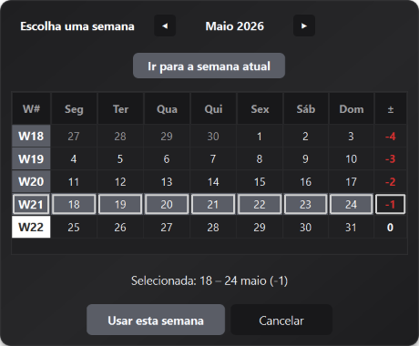
2.3 · Visita SC
O botão Visita SC, localizado entre o seletor Semana e Carregar do backup, transforma a playlist quando ela está presente
a visita do superintendente de circuito. Ao ser pressionado, o botão acende (ON) e o app prepara automaticamente as peças
especiais planejados para a visita.
Reunião no meio da semana: o Estudo Bíblico de Congregação é convertido em um segmento fixo de 30 minutos intitulado "Visita SC".
Fins de semana: Uma entrada dedicada é adicionada após o Estudo de A Sentinela e as durações são ajustadas para atender ao horário de encerramento.
Cores e avisos dedicados: a linha Visit SC adota uma paleta própria e prepara a música final específica.
Desativação rápida: ao desligar o toggle, a mesa retorna imediatamente ao alinhamento padrão sem perder as demais alterações.
2.4 · Carregar do backup
O botão Carregar do backup abre uma lista de pacotes salvos localmente, classificados por data, tipo de reunião e idioma.
É ideal para trabalhar offline ou restaurar programas já preparados para outro PC.
Lista detalhada: cada linha mostra a data de início da semana, tipo (meio de semana/fim de semana) e idioma.
Carga Segura: Os pacotes são verificados e aplicados diretamente na tabela atual.
Limpar mensagens: se não houver backups disponíveis, o aplicativo mostra imediatamente um aviso.
2.5 · Modo Lista Manual
A lista manual é útil quando a programação não provém do programa semanal ou quando se pretende preparar um programa especial.
Você pode criar ou editar entradas através da janela de edição dedicada, definindo o tipo, título e duração, e salvar o resultado
para reutilizá-lo mais tarde.
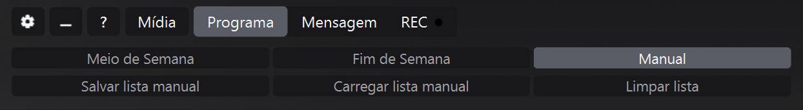
2.5.1 · Painel Manual
Manual: ativa a lista de reprodução personalizada e mostra os comandos dedicados no seletor de programas.
Salvar lista manual: exporte a lista de reprodução atual para um arquivo para reutilizar ou transferir para outro PC.
Carregar lista manual: importe uma lista salva e atualize tabela vinculada, contador de tempo e mídia.
Limpar lista: Limpa a programação manual da semana atual e também remove a mídia manual vinculada a esse rascunho.
2.5.2 · Criar e salvar
Ative o modo manual no painel Programa.
Use comandos de tabela para adicionar, excluir ou reordenar linhas; quando necessário, o JW Time abre a janela de edição de voz.
Salve a lista quando quiser mantê-la para outro momento.
Ao salvar, o JW Time pergunta o que incluir no arquivo .jwtimeplan.
Escolha Programa manual + mídia se você também deseja transferir arquivos locais, URLs e grupos da janela Mídia.
Escolha Somente programa de tempo manual se você precisar apenas da lista de reprodução com títulos e durações.
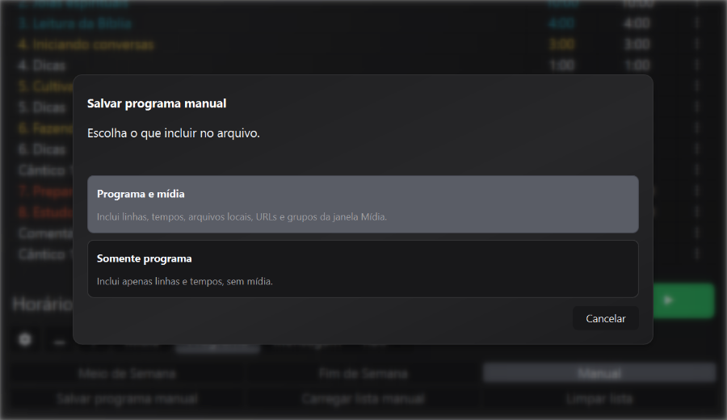
2.5.3 · Recarregar ou esvaziar uma lista
Use Carregar lista manual para recuperar uma lista de reprodução salva.
Se a lista contém linhas reconhecidas como músicas ou partes padrão, o JW Time aplica cores e comportamento consistentes.
As janelas vinculadas são atualizadas após o carregamento, portanto o Contador de Tempo e a Média permanecem alinhados com a tabela.
Use Limpar lista quando quiser reiniciar a partir de uma lista de reprodução vazia para a mesma semana.
2.5.4 · Mídia vinculada
Quando você anexa mídia a uma lista manual, salvar e carregar mantém o link para o programa preparado.
Isto é útil para reuniões especiais, assembleias locais ou programas que não seguem a semana padrão.
Se um arquivo não estiver mais disponível, o aplicativo notificará você quando você abrir ou usar a janela Mídia, para que você possa substituí-lo antes da reunião.
Para adicionar uma música, use o menu de entrada e escolha o item da música. Por aqui JW Time
grava corretamente o número da música, conecta a mídia disponível e a tela do contador de tempo adapta a exibição
sem ter que escrever manualmente o título na linha.
Esta seção explica as principais operações de gerenciamento do temporizador — como adicionar, editar ou excluir entradas —
e o uso de comandos start, jump e reset.
3.1 · Operações principais
Menu linha: abra os três pontos à direita para as ações disponíveis na peça selecionada.
No menu você pode iniciar a linha ou passar para a próxima, adicionar uma linha acima ou abaixo, duplicá-la, redefini-la ou excluí-la.
Os comandos Adicionar linha acima e Adicionar linha abaixo abrem um submenu com Música, Parte/Fala e Conselho.
Editar título/duração: clique duas vezes na célula e confirme.
Formatos Duração: 5 → 5:00, 1:30 → 1:30 minutos.
Iniciando e progredindo:
Linha inicial inicia a parte selecionada.
Quando uma linha está em andamento, o comando se torna Mover para o próximo.
Parar/Pausar gerencia o cronômetro em execução na barra inferior.
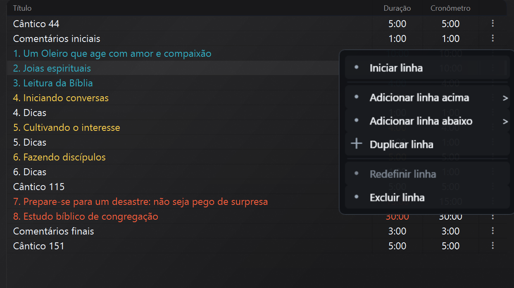
3.2 · Atualizações em tempo real
O cronômetro é atualizado constantemente: a contagem regressiva principal na parte superior mostra o tempo restante da parte ativa,
enquanto a linha correspondente permanece destacada na tabela. A cor da barra superior combina com a cor
da parte em andamento.
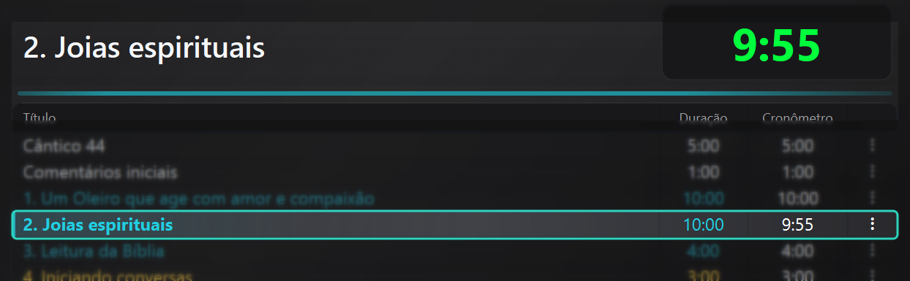
Se você alterar uma duração ou passar para a próxima parte, o Tempo de término estimado será recalculado imediatamente. Isso permite
para verificar o delta lead/lag e o tempo acumulado para pausas ou trocas de alto-falante sem abrir outros painéis.
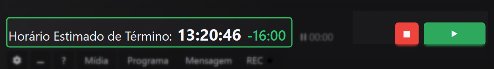
3.3 · Ajuste Automático — Estudo Bíblico e Estudo de Torre de Vigia
Se o Estudo Bíblico Adaptativo e/ou Estudo de Torre de Vigia Adaptativo estiverem habilitados em Configurações, o aplicativo apropriado
dinamicamente a duração da parte selecionada para manter o horário de encerramento da reunião. Preocupações de adaptação
somente as partes com opção ativa, podendo aumentar ou diminuir automaticamente os minutos com base no avanço/atraso acumulado.
Na imagem, a linha afetada é isolada e o valor ajustado é destacado em laranja, ficando imediatamente claro qual temporizador foi corrigido.
Você sempre pode intervir manualmente: o adaptativo recalcula a partir da nova situação.
A janela Mídia reúne os conteúdos vinculados à semana: músicas, vídeos, imagens e referências úteis à peça.
Ela pode ajudar o operador a preparar a reunião, conferir os conteúdos disponíveis e iniciá-los quando necessário.
Nota sobre o uso: a janela Mídia oferece ao operador uma ferramenta de suporte para preparar, conferir e gerenciar conteúdos multimídia já disponíveis. O uso prático depende das necessidades locais e deve sempre ocorrer em harmonia com as orientações da congregação e as disposições. Em caso de necessidade técnica, também pode ser usada como solução de suporte ou de reserva.
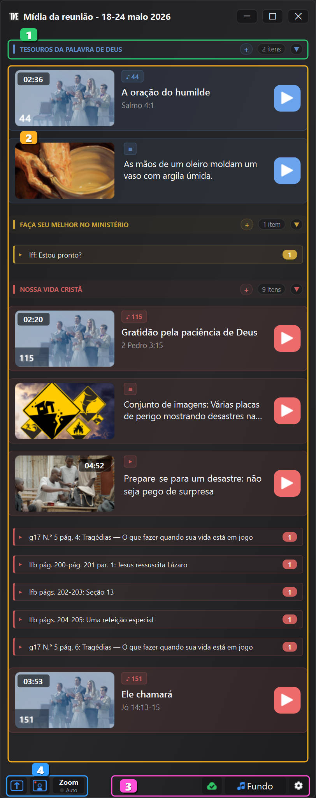
4.1 · Seções de comunicados e mídia
A área 1 indica quando a mídia oficial da semana ainda não está disponível offline. Você pode baixá-los
imediatamente ou adiar. O mesmo comportamento pode ser automatizado a partir das configurações do
seção 13 · Mídia, ativando o download automático da mídia oficial.
Abaixo do aviso você encontrará as seções da playlist, com título colorido, contador de itens e comandos rápidos.
Nota: o download da mídia oficial exige que a rede permita que o JW Time acesse jw.org e os recursos usados para a mídia. O download alternativo introduzido para os programas não está disponível para a mídia. Se roteadores, firewalls, DNS ou filtros de conteúdo bloquearem sites religiosos ou o acesso do JW Time, a mídia oficial pode não ser baixada; nesse caso, você pode usar mídia já disponível offline ou adicionar arquivos locais manualmente.
4.2 · Lista de Conteúdo
A área 2 contém abas com visualização, título, referência e botão iniciar. As cores refletem as áreas da programação,
para que você possa localizar rapidamente músicas, imagens, vídeos e referências relacionadas à peça.
No menu de contexto, você pode marcar manualmente um item como usado ou não usado. Se Atenuar mídia já usada estiver ativado, os itens usados continuam reconhecíveis com um estilo mais discreto.
As janelas de vídeos, áudios e imagens oficiais também incluem o modo Global quando você precisa pesquisar fora da categoria atual.
4.3 · Barra inferior
A área 3 reúne os comandos rápidos da janela Media: conteúdos baixados, visualização, sincronização,
plano de fundo e configurações dedicadas. Ele permanece na parte inferior para ser acessível mesmo quando a lista é longa.
4.4 · Controles de Zoom
A área 4 coleta os controles de Zoom da janela Mídia. Eles são projetados para aqueles que exibem mídia mesmo em
videoconferência e trabalhar com a Tela Pública no monitor da sala.
Compartilhamento- Envia o atalho configurado para o Zoom iniciar ou parar o compartilhamento.
Mostrar/Ocultar Zoom: utilizado para mostrar os palestrantes ou a janela Zoom no monitor público. O JW Time oculta temporariamente a Tela Pública e permite ver o que está por baixo: por isso a janela dos alto-falantes do Zoom, ou uma tela duplicada com Zoom, já deve estar posicionada atrás da Tela Pública antes de pressionar o botão.
Zoom automático: ativa a automação de zoom para a sessão. Ao iniciar uma mídia, o JW Time pode enviar automaticamente o atalho de compartilhamento e, se configurado, interrompê-lo ao final.
Antes de usar essas teclas, configure um atalho global de compartilhamento de tela no Zoom e digite
a mesma combinação em seção 14 · Zoom. Se os dois atalhos não corresponderem,
JW Time envia o comando mas o Zoom não reage conforme o esperado.
4.5 · Pré-reunião e música de fundo
O painel Fundo gerencia a música antes da reunião e, se configurado, também após a reunião,
sem misturá-lo com a mídia da programação. Durante a reprodução mostra a música atual, a próxima música,
progresso e duração.
Você pode iniciar, pausar, pular para a música anterior ou seguinte, ativar o shuffle e abrir
a lista de reprodução. As configurações de música, incluindo comportamento automático e fades, são configuradas no painel
seção 13 · Mídia.
JW Time 4.0 separa as visualizações: a Tela Pública é usada para conteúdo visível para a sala,
enquanto a Tela do Contador de Tempo permanece dedicada a quem acompanha os tempos.
5.1 · Tela Pública
A Tela Pública mostra contagem regressiva, mensagem de boas-vindas, escrita do ano, logotipo e conteúdo
visualizações em uma janela separada.
Antes da reunião: Mostra a contagem regressiva e o texto configurado.
Durante a reunião: pode permanecer disponível para conteúdo público ou cenas dedicadas.
Configurações: monitor, mensagem, contagem regressiva, logotipo e layout são ajustados na seção 11 · Reuniões e na 12 · Tela.
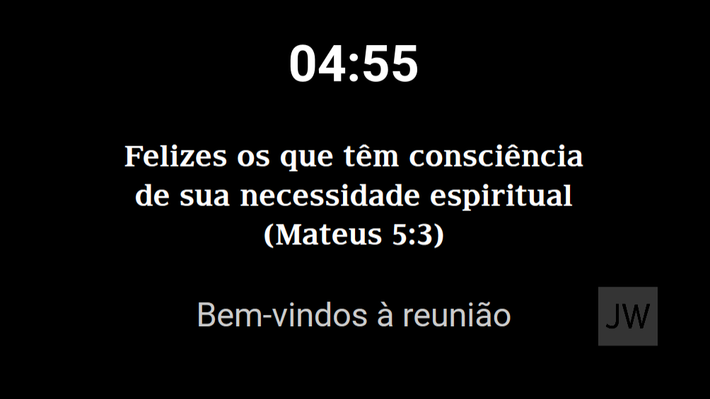
5.2 · Tela do Contador de Tempo
A Tela do Contador de Tempo mostra o relógio, contagem regressiva da parte em andamento, mensagens para o orador e estados relacionados ao gerenciamento do tempo.
É a visão mais adequada para quem trabalha no pódio, no presidente ou no tempo.
Exibição no monitor selecionado ou janela livre.
Temporizador parcial atual e informações contextuais.
Mensagens de tela inteira ou parcial enviadas da janela principal.
5.3 · Personalizar a tela do contador de tempo ↑ Índice
A tela do contador de tempo pode ser personalizada a partir do botão Personalizar no seção 9 · Geral.
Você pode iniciar a partir de uma predefinição já disponível ou modificar o layout de acordo com suas necessidades. A Tela Pública tem
próprias configurações no 12 · Tela; aqui focamos o trabalho no layout do Contador de Tempo.
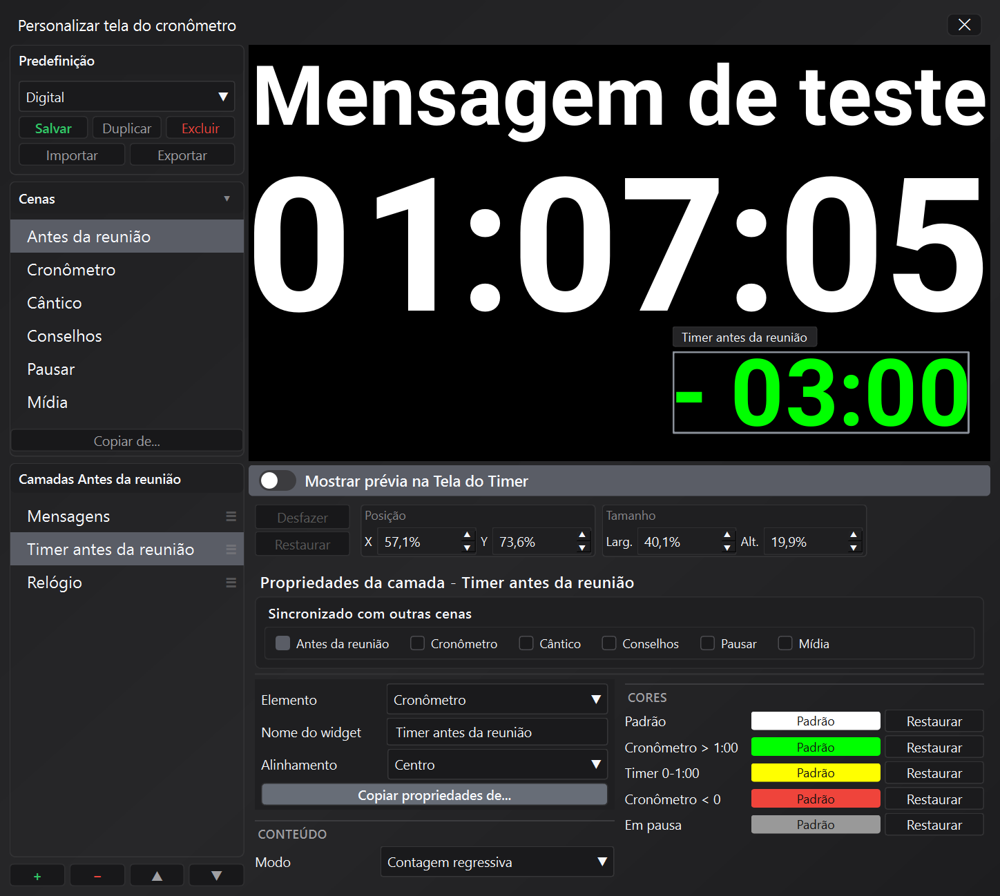
Iniciando a partir de uma predefinição
Uma predefinição é um layout inicial.
Você pode selecionar uma predefinição em seção 9 · Geral e usá-la como está ou abrir o editor de personalização para editá-la.
Escolha uma cena
O layout é organizado em cenas.
Cada cena corresponde a uma situação diferente na tela do contador de tempo. Isso permite mostrar um layout diferente com base na hora ou tipo de peça que está sendo visualizada.
Antes de fazer alterações, verifique sempre qual cena está selecionada.
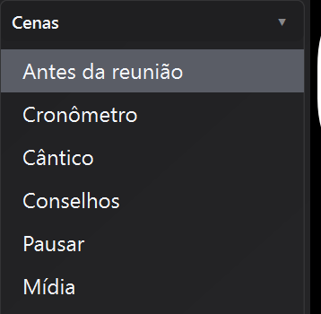
Tipos de camada disponíveis
Quando você pressiona + no painel Camadas, o JW Time mostra os tipos de itens que você pode adicionar à cena.
Alguns níveis leem dados reais da reunião e mudam automaticamente; outros são usados para construir o layout gráfico.
Não é conveniente mostrar todas as propriedades de cada nível no manual, pois o painel de propriedades muda com base em
ao tipo selecionado. Aqui você encontrará o que cada nível faz e quando usá-lo.
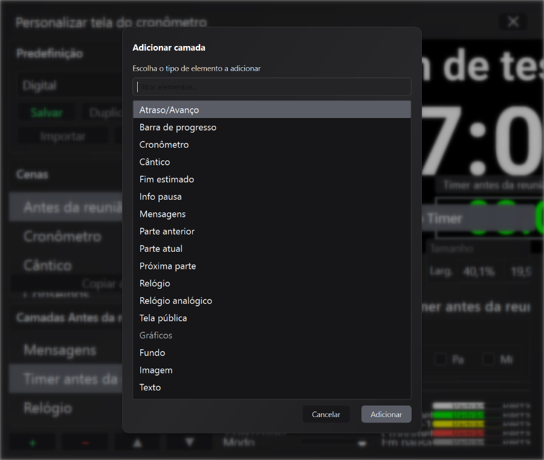
Níveis dinâmicos principais
Temporizador: mostra o andamento da parte ativa. Pode ser definido como contagem regressiva ou contagem crescente.
Música: Mostra informações da música quando a cena é sobre uma música.
Mensagens: mostra as mensagens enviadas da janela principal, tanto em tela cheia quanto em formato parcial.
Relógio: Mostra a hora digital.
Relógio Analógico- Adiciona um relógio gráfico personalizável.
Informações da reunião
Parte atual: Mostra o título da parte atual.
Próxima parte: mostra a próxima parte, útil para preparar a mudança.
Parte anterior: mostra informações sobre a peça acabada, quando o layout assim o exigir.
Fim estimado- Mostra o horário de término calculado pelo app.
Atraso/Antecipado: mostra o delta comparado ao horário programado.
Informações de pausa: mostra informações relacionadas a pausas ou tempo técnico.
Barra de progresso: exibe graficamente o progresso do tempo.
Camadas gráficas gratuitas
Fundo: adiciona uma caixa colorida, útil para criar faixas, áreas de contraste ou contêineres visuais.
Texto: adiciona um texto fixo personalizado.
Imagem: Adiciona um logotipo ou imagem decorativa.
Fundo, Texto e Imagem camadas podem ser adicionadas diversas vezes.
Para outros níveis, se já existir um elemento do mesmo tipo, o editor oferece a possibilidade de vinculá-lo a outra cena
ou criar um independente quando necessário.
Editando o layout
No editor você pode editar as camadas presentes na cena selecionada.
Para cada camada você pode alterar a posição e o tamanho de três maneiras:
com o mouse, movendo ou redimensionando a caixa na visualização
com o teclado, usando as setas para movê-la
com os valores de posição e tamanho mostrados na visualização
Os valores X e Y controlam a posição do camada.
Os valores Width e Alt controlam o tamanho da camada.
Todos esses valores são expressos em porcentagem.
No painel de camadas você também pode gerenciar oordem de superposição: cada nível pode
fique acima ou abaixo dos demais, determinando qual aparece em primeiro plano em caso de sobreposição.
Você pode alterar a ordem arrastando as camadas na lista ou usando os botões
▲ e ▼ embaixo dele.
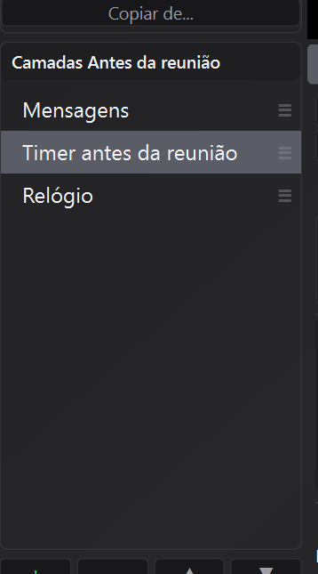
Mover, redimensionar e ordenar camadas
Depois de selecionar um nível, você pode:
arraste-o com o mouse para movê-lo na visualização
use as setas do teclado para ajustar sua posição (setas: 0,5% — Mudança: 2,0% — Ctrl: 0,1%)
arraste as bordas ou cantos do quadro para redimensioná-lo
Abaixo da visualização você encontrará os controles numéricos X, S, Largura e Alt.
para ajustar a posição e o tamanho com precisão.
Após as alterações, salve o layout e aplique-o. Você pode reabrir o editor a qualquer momento para atualizá-lo.
A função Mensagens permite que você se comunique de forma discreta e clara com o palestrante durante a reunião, permitindo que você
avisá-lo ou dar-lhe instruções sem interromper ou perturbar o andamento da peça. Mensagens aparecem na tela
do contador de tempo, para que o palestrante os veja em tempo real, sem distrações.
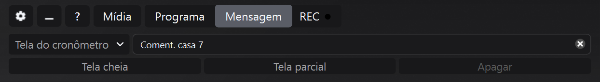
6.1 · Mensagem em tela cheia
Clique na área onde diz Inserir mensagem.
Digite o texto.
Pressione Tela cheia → o texto aparece em tela inteira no monitor do cronômetro.
6.2 · Mensagem parcial na tela
Clique na área onde diz Inserir mensagem.
Digite o texto.
Pressione Tela parcial → o texto aparece na janela do Contador de Tempo sem cobri-la completamente, permitindo que o orador veja a mensagem e o cronômetro.
6.3 · Contador de Tempo de Espelhamento
Quando você envia uma mensagem, uma janela de visualização redimensionável e móvel aparece automaticamente mostrando
exatamente o que o orador vê no monitor do cronômetro. Isso permite que você verifique a exibição em tempo real
da mensagem e do temporizador.
O botão REC Ele está localizado na barra inferior ao lado de Agenda e Mensagem. O ponto ao lado do texto mostra
o status da gravação (espera, ativo, pausado ou conversão de MP3), enquanto o painel REC fornece controles rápidos
para abrir a pasta JWTimeREC, gerenciar gravações manuais e monitorar os níveis de áudio do PC e do microfone.
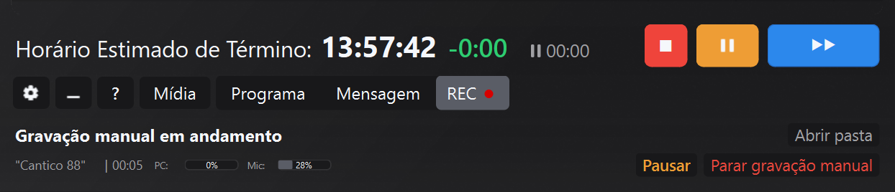
7.1 · Indicadores e estados dos botões
Aguardando: o ponto permanece cinza e o painel mostra "Aguardando" / "Sem gravação ativa".
Gravação em andamento: o ponto fica piscando em vermelho e o painel mostra "Gravação em andamento" com o título e o cronômetro da parte.
Pausa: o ponto muda para laranja; as inscrições estão suspensas e podem ser retomadas.
Conversão de MP3: o ponto fica azul e o botão permanece desativado até que a exportação do arquivo seja finalizada.
7.2 · Controles rápidos REC
O painel REC coleta os controles a serem usados sem inserir as configurações:
Abrir pasta: abre diretamente o diretório JWTimeREC contendo as gravações.
Ativar/Desativar gravação: ativar ou parar a gravação manual sem inserir as configurações.
Pausar/Retomar: botão visível durante a gravação para suspender temporariamente o áudio (por exemplo, orações) e retomá-lo no mesmo arquivo.
Detalhes online: o título da linha ativa e a duração atualizada aparecem sob o status.
Mensagens automáticas: indica imediatamente quando a gravação está desabilitada ou quando uma conversão está em andamento.
7.3 · Alternar área com níveis de áudio
Ao abrir REC, um painel sempre visível aparece na barra inferior com status de gravação e medidor de áudio.
Aqui você pode iniciar/parar gravações manuais, monitorar os níveis do PC/Mic e abrir a pasta JWTimeREC com um único clique.
Quando o Servidor web está ativo, você pode abri-lo de outro dispositivo na mesma rede local via navegador.
Isto permite que o Contador de Tempo seja exibido em projetores externos, tablets ou computadores, e é útil para o presidente
que segue o cronômetro das várias partes.
Para a configuração completa do Servidor web, controle remoto, link remoto e QR, consulte seção 15 · Conexão e Servidor.
8.1 · Visualizar o Web Monitor na rede local
No navegador você pode:
Visualizar temporizadores e contadores de tempo em tela cheia.
Imprima a lista de reprodução.
Verifique o progresso do tempo em tempo real.
Execute operações remotas no cronômetro e na programação, se o controle remoto estiver habilitado.
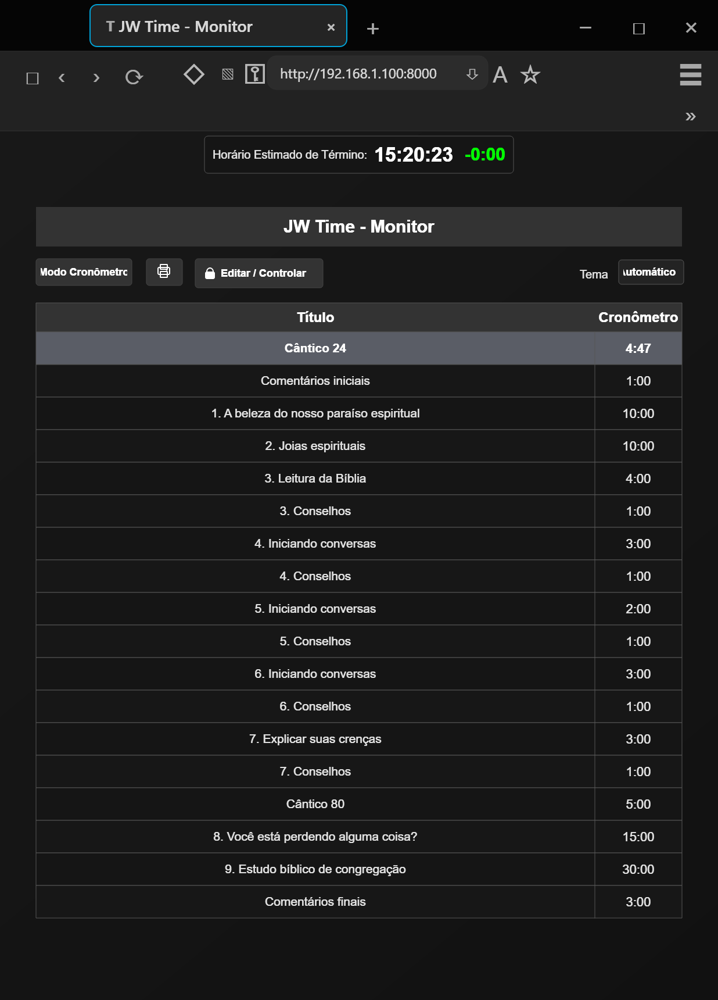
8.2 · Controle o cronômetro e o programa do navegador
Se o controle remoto estiver habilitado, a partir do navegador você pode intervir no cronômetro e no programa sem ser
na frente do computador principal.
As operações disponíveis dependem das permissões configuradas e podem incluir:
iniciar o cronômetro
pausar e retomar
parar
controlar o programa/playlist
modificar as durações ou valores disponíveis na lista de reprodução, se a função autorizada permitir
Você pode abrir o servidor Web digitando o endereço mostrado no aplicativo ou usando o QR, se disponível.
Dependendo da configuração, diferentes níveis de acesso podem ser fornecidos, por exemplo, apenas para acesso
visualização ou para controle e modificação. Se configurado, o acesso pode exigir um PIN.
8.3 · Acesso remoto para reuniões de videoconferência
Quando a pessoa que precisa acompanhar ou controlar o JW Time não estiver na mesma rede local, você pode gerar um link remoto temporário.
Este cenário é útil para reuniões de videoconferência, assistência remota ou gerenciamento a partir de um dispositivo conectado
para outra rede.
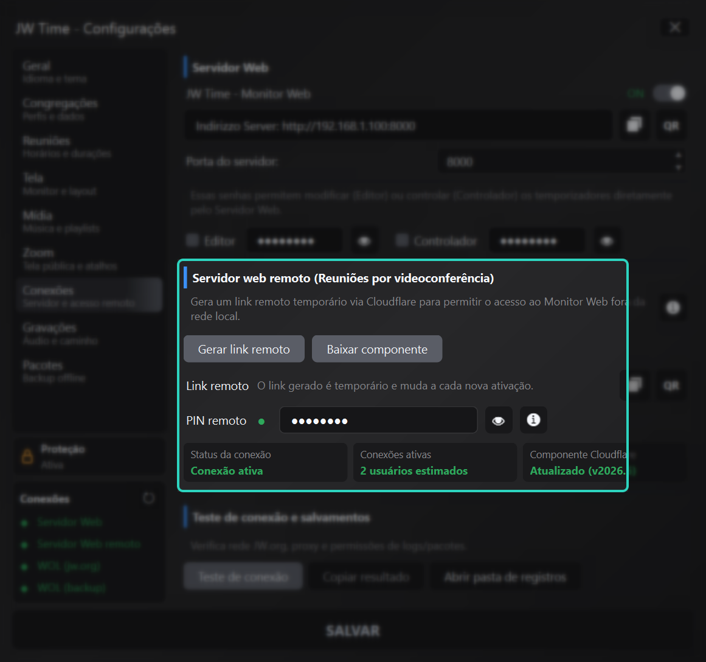
Mesma interface web: o link remoto abre o Web Monitor a partir do navegador, como acontece na rede local.
Link temporário: o link remoto muda a cada ativação e não deve ser considerado permanente.
PIN remoto- Quando configurado, protege funções acessíveis de fora da rede local.
Utilizar com videoconferência: permite que qualquer pessoa que acompanhe a reunião de fora da rede consulte ou verifique o programa de acordo com as permissões definidas.
A parte operacional é configurada em seção 15.2 · Servidor web Remoto.
As configurações de zoom permanecem separadas: o Zoom gerencia o compartilhamento e os atalhos,
enquanto o link remoto diz respeito ao Web Monitor.
Parte II · Painéis de configurações
Nesta parte você pode configurar o comportamento do aplicativo: configurações gerais, perfis de congregação, reuniões,
Tela de contador de tempo, mídia, zoom, monitor de web e servidor, gravações e backup e restauração.
Idiomas do programa: define em qual idioma baixar ou exibir a programação semanal.
Selecione o tema: defina o tema gráfico do aplicativo.
Escala de interface: adapta texto e controla tamanhos; a alteração se aplica após a reinicialização.
Formato de hora: alterna o formato 24h e o formato 12h AM/PM.
Gerenciamento de temporizador
Pausa automática: insere automaticamente uma pausa entre uma parte e a próxima quando você pressiona Iniciar/Avançar.
Mostrar coluna Fim: mostra na tabela do programa o horário previsto de término da parte atual e das partes seguintes, calculado em tempo real a partir da hora atual, dos temporizadores restantes e dos desvios acumulados.
Novidades
Mostrar o que há de novo na inicialização: abre um resumo conciso dos recursos introduzidos no aplicativo, para que quem usa o JW Time possa descobrir rapidamente o que vale a pena tentar.
Você pode desativá-lo quando o grupo já estiver familiarizado com a versão instalada.
Este painel permite gerenciar perfis de congregações. Cada perfil pode manter configurações dedicadas,
então o JW Time pode se adaptar a diferentes contextos sem ter que reconfigurar janelas, mídia e layout todas as vezes.
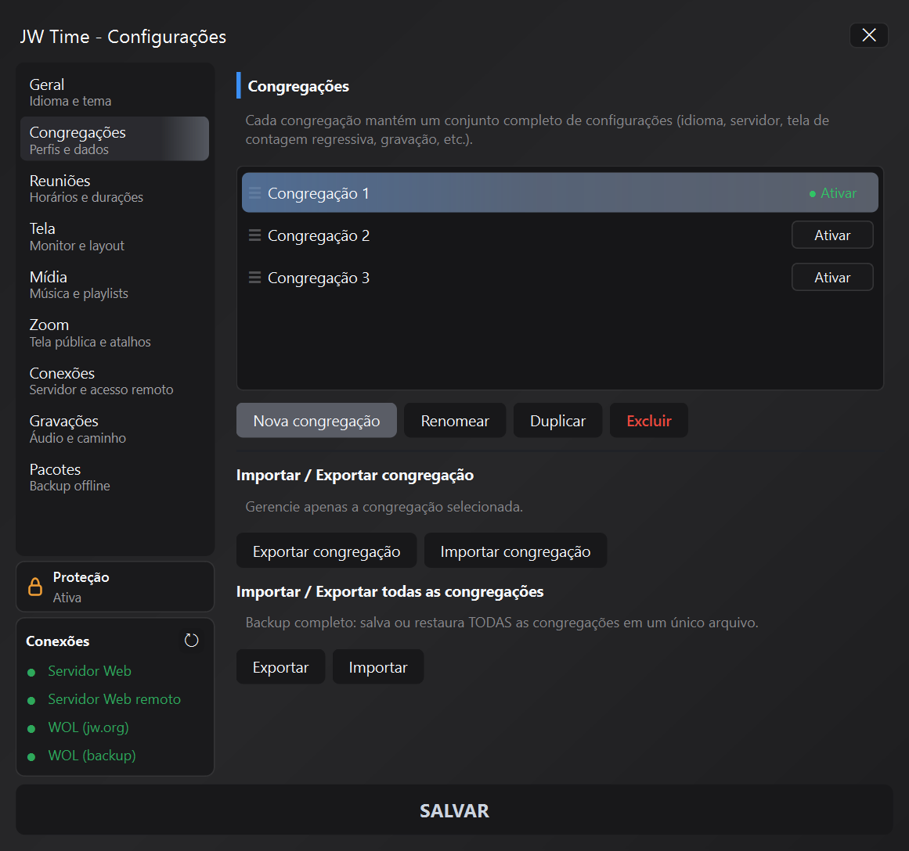
Perfis de Congregação
Lista de Congregação: mostra os perfis disponíveis. Cada perfil mantém seu próprio idioma, servidor, telas, gravações, mídia e configurações.
Nova Congregação- Crie um perfil separado para configurar.
Renomear: altera o nome do perfil selecionado sem perder as configurações.
Duplicar: cria uma cópia do perfil atual, útil quando duas configurações são semelhantes.
Excluir: remove o perfil selecionado quando ele não for mais necessário.
Importar/Exportar
Exportar congregação: salva apenas o perfil selecionado.
Importar congregação: carrega um perfil exportado anteriormente.
Exportar- Cria um backup completo de todas as congregações.
Importar- Restaura um backup que contém múltiplas congregações.
11 · Reuniões (Temporizador de início de reunião) ↑ Índice
Este painel é utilizado para programar a contagem regressiva de início da reunião na Tela Pública.
Você define o dia, horário e antecedência (em minutos) que deseja fazer
iniciar a contagem regressiva.
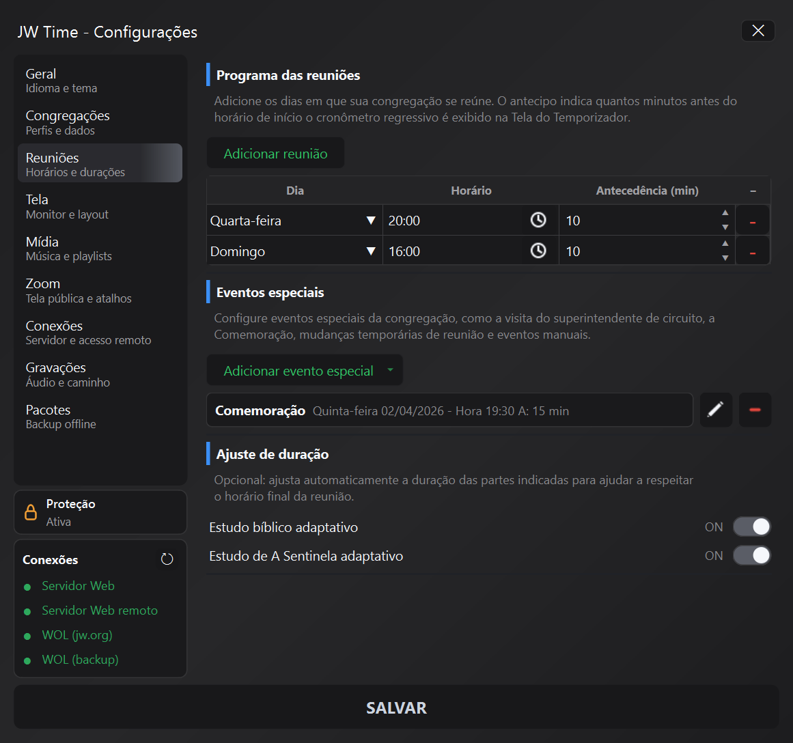
11.1 · Agendamento (Dia · Horário · Antecipação)
Adicionar reunião: insere uma nova linha na tabela de horários.
Dia: escolha o dia da semana em que a reunião será realizada.
Hora: defina o horário de início da reunião.
Avanço (min): quantos minutos antes do horário definido a contagem regressiva deve aparecer na Tela Pública.
-: exclui a linha do tempo que não é mais necessária.
11.2 · Eventos Especiais
Adicionar Evento Especial: Crie eventos como visita do superintendente de circuito, Memorial ou eventos manuais.
Visita SC: aplique as regras e horários dedicados à visita.
Memorial- Registre um compromisso especial com data e horário específicos.
Editar/excluir: os botões à direita permitem atualizar ou remover o evento.
11.3 · Tempo de Adaptação
Estudo Bíblico Adaptativo- Ajusta automaticamente o Estudo Bíblico de Congregação para ajudar a cumprir o tempo do fim.
Estudo Adaptativo da Torre de Vigia: Aplique a mesma lógica ao Estudo de A Sentinela.
Nota: os horários de início são para a contagem regressiva pública; o horário de término estimado depende da programação e de quaisquer ajustes de duração.
Este painel coleta as configurações dedicadas à Tela do Contador de Tempo e à Tela Pública. A partir daqui você pode
escolha onde mostrar a informação, como apresentá-la e quais elementos tornar visíveis durante a reunião.
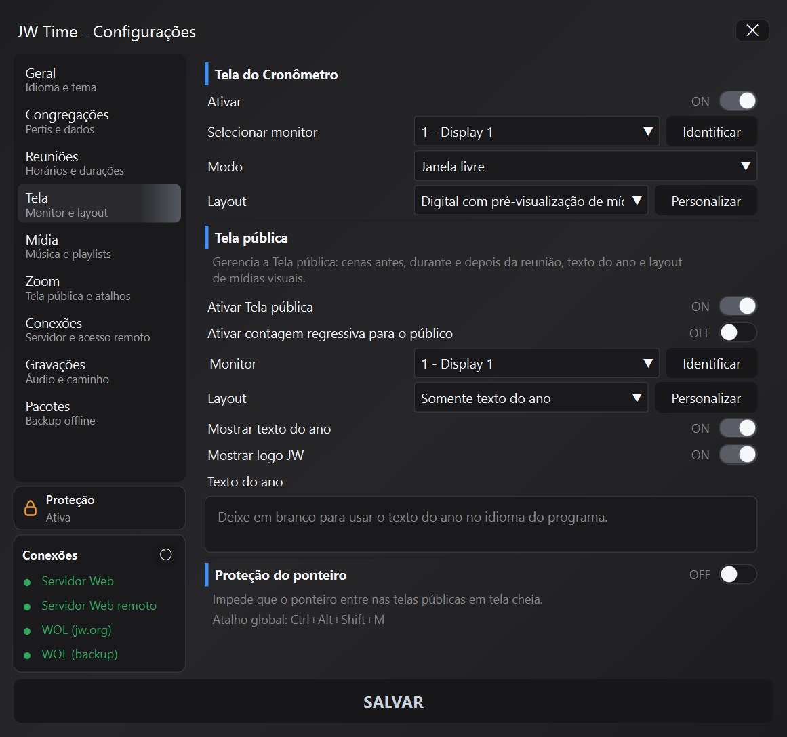
Habilitar: ativa ou desativa a tela do contador de tempo.
Selecione o monitor: escolha o monitor ou janela na qual deseja exibir o contador de tempo.
Identificar: mostra uma referência no monitor selecionado, útil quando vários monitores estão conectados.
Modo: define como o Contador de Tempo deve ser aberto, por exemplo como uma janela livre.
Fundo transparente: Torna a janela transparente quando o modo permite.
Layout: selecione a predefinição gráfica da tela do contador de tempo.
Personalizar: abre o editor do layout selecionado.
Tela Pública
Ativar Tela Pública: habilita a janela dedicada aos conteúdos visíveis da sala.
Ativar contagem regressiva para o público: mostra a contagem regressiva para o início da reunião na Tela Pública.
Monitor: Selecione onde abrir a janela pública.
Layout: escolhe o preset gráfico da Tela Pública.
Mostrar escrita do ano: Habilita ou oculta a escrita do ano.
Mostrar logotipo JW: Mostrar ou ocultar o logotipo na cena pública.
Texto para escrita do ano: permite inserir um texto personalizado; se permanecer vazio, o ano será usado na linguagem do programa.
Este painel contém configurações úteis quando JW Time é usado junto com Zoom ou outras configurações
salas que exigem controles de áudio/vídeo dedicados. As opções abaixo alimentam as teclas de Zoom do
4 · Janela Mídia.
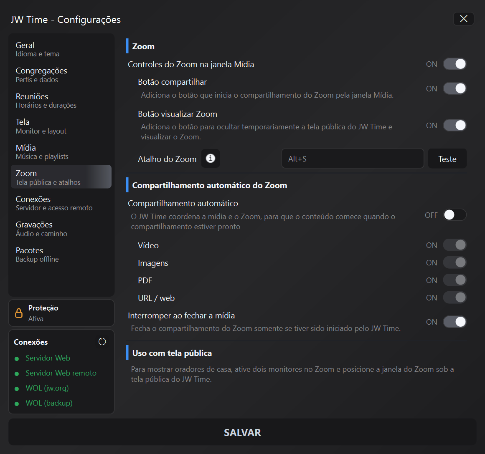
Zoom
controles de Zoom: mostram as teclas dedicadas ao Zoom na janela Mídia.
Zoom Sharing: habilita o botão que envia o atalho de compartilhamento para o Zoom.
Mostrar Zoom ao público: habilita o botão que oculta temporariamente a Tela Pública do JW Time para mostrar os palestrantes ou a janela Zoom já posicionada abaixo, no monitor da sala.
Atalho de compartilhamento- Este deve ser o mesmo atalho global configurado no Zoom para iniciar ou parar o compartilhamento de tela.
Teste: Envie o atalho e verifique se o Zoom abre ou altera o status do compartilhamento.
Atalho de zoom
JW Time não escolhe a janela ou tela para compartilhar no Zoom para você: envie a combinação de teclas
que você indicou neste painel. Por este motivo o mesmo atalho também deve estar ativo nas configurações
do Zoom, de preferência como um atalho global. Se você usar uma combinação diferente no Zoom, a tecla
Compartilhamento e o modo Zoom automático podem não funcionar de maneira confiável.
Antes da reunião confira o fluxo completo: prepare o Zoom no monitor público, coloque a Tela Pública abaixo
a janela de alto-falantes ou a tela de Zoom duplicada, tente o atalho com Teste e então
use os controles da janela Mídia.
Automação de mídia
Início automático: quando a chave Zoom automático está ativo na janela Mídia, inicia o compartilhamento quando uma mídia é reproduzida.
Interromper ao fechar a mídia: interrompe o compartilhamento do Zoom quando a mídia é fechada ou termina, somente se o compartilhamento foi iniciado pelo JW Time.
Pausa Inicial: Prepara a mídia para pausar após o início do compartilhamento.
Restaurar foco: Retorna o foco para a janela Mídia após a ação de Zoom.
Use com reuniões de videoconferência
Se alguém precisar consultar ou controlar o JW Time off-line durante uma reunião de videoconferência,
não pode ser configurado a partir do Zoom: use seção 8.3 · Acesso remoto para reuniões de videoconferência.
Neste painel permanecem apenas atalhos, compartilhamento e gerenciamento da janela Zoom.
Este painel gerencia a conectividade do aplicativo: o Web Monitor e o Web Server para visualização e controle a partir do navegador,
o QR para acesso rápido, controle remoto, testes avançados de conexão e gerenciamento de logs.
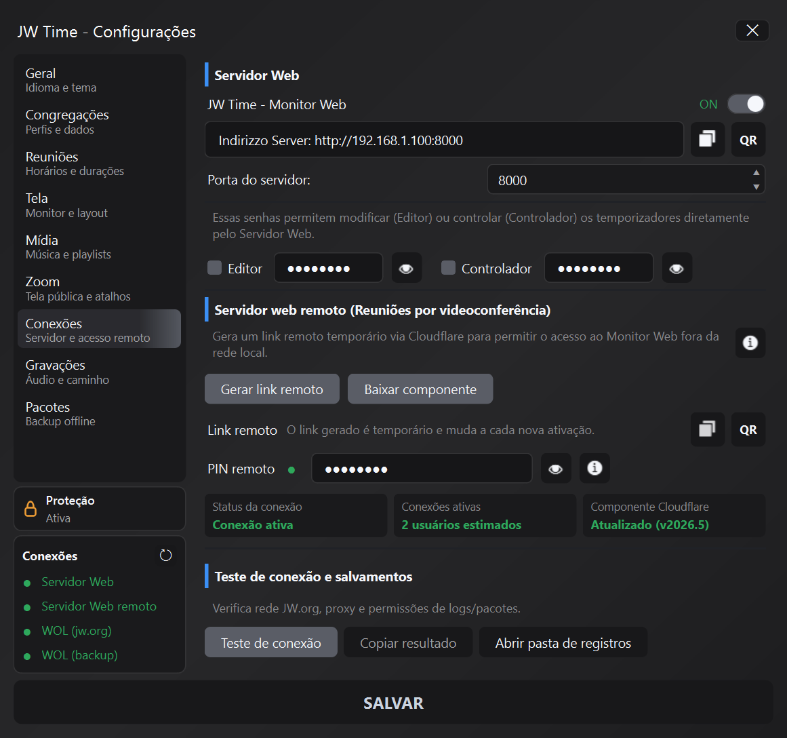
15.1 · Web Monitor e Servidor web
JW Time - Web Monitor: ativa ou desativa o servidor interno.
Endereço do Servidor: mostra a URL para abrir na rede local. No manual usamos um endereço genérico, por exemplo http://192.168.1.100:8000.
Copiar endereço: Copia a URL para a área de transferência.
QR: mostra um código QR para abrir o Web Monitor mais rapidamente a partir do seu telefone ou tablet.
Porta do Servidor: Defina a porta HTTP, normalmente 8000.
Editor/Controlador: Habilite senhas para editar ou controlar o cronômetro e agendamento a partir do navegador. Com a função de Controlador, o Web Monitor também se torna um painel operacional: pode iniciar, pausar, parar e atualizar os valores disponíveis sem retornar ao computador principal.
Quando o Servidor web está ativo, o JW Time pode ser aberto de outro dispositivo na mesma rede local via navegador,
para usar o Web Monitor do seu telefone, tablet ou outro computador.
15.2 · Servidor web Remoto
Esta seção é usada para tornar o Web Monitor acessível mesmo fora da rede local, por exemplo durante
reuniões por videoconferência. Para contexto de uso, consulte seção 8.3 · Acesso remoto para reuniões de videoconferência;
aqui você encontrará os controles práticos.
Gerar link remoto: cria um link temporário via componente Cloudflare quando é necessário acesso fora da rede local.
Baixar componente: baixar o componente necessário para a conexão remota.
Link Remoto: Mostra o link gerado e os botões Copiar/QR.
PIN remoto: protege o acesso a funções remotas quando configuradas.
Status do link- Indica se o componente remoto, as conexões ativas e o Cloudflare estão disponíveis.
15.3 · Controle Remoto
Se a função estiver habilitada, o Servidor web poderá ser utilizado não apenas para visualização, mas também para execução
Operações remotas de temporizador e programa. Quando a função Controlador está habilitada, a tela da web mostra
também controla para intervir nos valores disponíveis, por exemplo, a duração de uma peça.
Entre estes podem estar disponíveis:
iniciar o cronômetro
pausar e retomar
parar
controlar o programa/playlist
Dependendo da configuração, diferentes níveis de acesso podem estar disponíveis, para distinguir
consulta simples das funções de controle ou modificação.
15.4 · Teste de conexão
Teste de conexão: verifique as permissões de rede, JW.org, proxy e gravação.
Copiar resultado: copia o resultado do teste para auxílio ou diagnóstico.
Abrir pasta de log: abre diretamente a pasta de log do aplicativo.